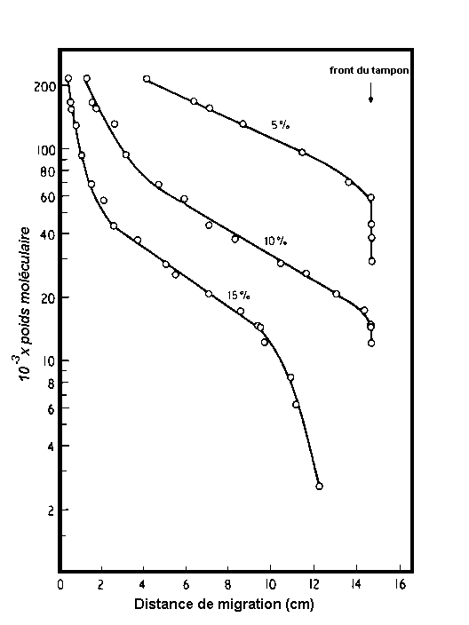

SDS-PAGE
N'importe quel ion ou un groupe chargée se migrer lorsqu'il est placé dans un champ électrique. Puisque les protéines portent une charge nette à tout pH autre que leur point isoélectrique, elles aussi vont migrer et leur taux de migration dépend de la densité de charge (le rapport de la charge à la masse) des protéines concernées; plus le rapport de la charge à la masse de la plus rapide de la molécule va migrer. Dans l'électrophorèse de zone, le mélange de molécules à séparer est placé en tant que zone étroite ou une bande à une distance appropriée à partir des électrodes de telle sorte que, pendant l'électrophorèse, les protéines de mobilités différentes déplacer en zones discrètes dont progressivement séparés les uns des autres en tant que produit d'électrophorèse. Dans la pratique, l'électrophorèse de zone de protéines est rarement réalisée en solution mais est libre effectuée dans une solution stabilisée dans un milieu de support. De nombreux médias de soutien sont en cours d'utilisation, mais de loin le plus populaire pour l'électrophorèse des protéines est en gel de polyacrylamide.
Résultats gel de polyacrylamide de la polymérisation du monomère d'acrylamide dans les chaînes longues et la réticulation de ces composés par bifonctionnels tels que le N, N'-méthylène bisacrylamide (généralement abrégé bisacrylamide). Cette réaction crée une matrice poreuse dans laquelle la taille des pores est du même ordre de grandeur que les molécules protéiques. Ainsi, lors de l'électrophorèse en gel de polyacrylamide, les protéines sont soumises à un effet de tamisage moléculaire qui ralentit la migration des plus grosses protéines par rapport aux petites protéines. Séparation des protéines natives par électrophorèse sur gel de polyacrylamide (PAGE) en non-dissociation des tampons (par exemple Tris/HCI) est donc dépendante de la densité de charge à la fois et la taille.
La mesure de tamisage moléculaire au cours PAGE dépend de l'étroitesse de la taille des pores du gel se rapproche de la taille des protéines migration. La taille de pore efficace de gel de polyacrylamide varie à la fois avec la concentration totale de l'acrylamide dans le mélange de gel (taille de pores diminue avec l'augmentation de la concentration d'acrylamide) et avec la proportion de l'agent de réticulation bisacrylamide utilisé. Dans la pratique, la proportion de l'agent de réticulation est maintenue constante et la taille de pore efficace est modifiée par modification de la concentration de monomère d'acrylamide. Séparations la plupart des protéines sont effectuées en utilisant des gels allant de 5 à 15% d'acrylamide. Les gels de pourcentage inférieurs ont les plus grandes tailles de pores et donc, pour l'électrophorèse de zone, sont utilisés pour séparer les grandes protéines alors que la concentration d'acrylamide est augmenté pour résoudre les petites protéines.
A l'origine, l'électrophorèse des protéines dans la zone de polyacrylamide fait usage de gels tige cylindrique dans des tubes de verre plat mais de nos jours des gels de la dalle, de 0,75 à 1,5 mm d'épaisseur, sont généralement préféré à la place. Un des principaux avantages de gels en plaque, c'est que de nombreux échantillons de protéines, y compris moléculaires des protéines marqueurs de poids (voir ci-dessous), peuvent être soumis à une électrophorèse dans des conditions identiques dans un seul gel de sorte que les profils de bandes produites sont directement comparables. En revanche, en raison de différences mineures dans l'efficacité de polymérisation, la longueur du gel, de diamètre de gel, etc, gels tige même de l'échantillon même protéine sont rarement identiques. Bien que les gels de dalles sont maintenant utilisés presque à l'exclusion des gels de tige pour de simples séparations électrophorétiques, gels tige sont préférés pour certaines situations, notamment pour mener à bien la première étape-dimensionnelle de l'électrophorèse sur gel à deux dimensions.
Bien PAGE de protéines natives est utile dans un certain nombre de situations, en particulier lorsque l'on souhaite détecter une protéine particulière séparés par son activité biologique, la grande majorité des études portant sur les conditions d'utilisation page destinée à dissocier les protéines de l'échantillon dans leurs différents sous-unités polypeptidiques . L'agent de dissociation plus couramment utilisé est le détergent ionique, le dodécylsulfate de sodium (SDS). SDS-PAGE de protéines permet une analyse rapide de la composition de mélanges de protéines et est donc extrêmement utile pour surveiller la pureté des échantillons de protéines au cours de protocoles de purification. Pour certaines applications, il peut même être utilisé comme une procédure à petite échelle préparative.
Pour l'analyse par SDS-PAGE, le mélange de protéines est dénaturé par chauffage à 100ºC pendant 2 - 5 minutes en présence d'un excès de SDS et réactif thiol comme le 2-mercaptoéthanol (pour cliver des liaisons disulfures). Dans ces conditions, la plupart des polypeptides se lient SDS dans un rapport poids constant (1,4 g de SDS par gramme de polypeptide). Chaque échantillon est ensuite déposé sur un gel tige séparée ou dans un puits séparé de l'électrophorèse sur gel en tranches et est réalisée avec du SDS présenter à la fois dans le gel et dans le tampon d'électrode. Pour les raisons exposées ci-dessous, des protéines marqueurs de poids moléculaire connu sont également dissocié d'une manière identique et chargé dans les autres puits. Après l'électrophorèse, les positions des bandes de protéines séparées sont révélées par coloration, généralement avec du bleu de Coomassie ou une coloration à l'argent.
Au cours de SDS-PAGE, les charges intrinsèques des polypeptides sont insignifiants par rapport aux charges négatives prévues par le détergent lié, de sorte que les complexes SDS-polypeptidiques ont des densités de charge essentiellement identiques et de migrer dans des gels de polyacrylamide de la bonne porosité strictement selon la taille de polypeptide et de ne pas charger. La distance depuis migré par un polypeptide est directement proportionnel à sa taille, la protéine d'intérêt peuvent être identifiées dans le profil de gel, si le poids moléculaire de ses polypeptides constitutifs est connu ou, inversement, le poids moléculaire de polypeptides individuels peuvent être déterminées. Pour estimer le poids moléculaire d'un échantillon polypeptide nécessite l'enquêteur de construire une courbe standard de log (polypeptide de poids moléculaire) fonction de la distance migré pour chacun des standards moléculaires des polypeptides marqueurs de poids courent sur le gel. Cela donne une relation linéaire. Connaissant la distance migré par l'échantillon polypeptide, on peut alors lire son poids moléculaire de la courbe.

Des courbes d'étalonnage de log10 (polypeptide de poids moléculaire) par rapport à la distance de migration au cours de SDS-PAGE dans des gels de polyacrylamide de la dalle. Les gels de polyacrylamide utilisés étaient la concentration uniforme de 5%, 10% ou 15%. [Reproduit de Hames, BD (1981) en Gel Electrophoresis of Proteins A Practical Approach.Hames, BD et Rickwood, D. (Eds), IRL Press Ltd, Oxford.]
Notez, cependant, que pour n'importe quelle concentration un gel de la relation entre log (poids moléculaire) et la distance migré (ou mobilité relative) est linéaire sur une gamme limitée de poids moléculaire, de sorte que la concentration du gel choisi pour l'étape doit être celle qui donnera une relation linéaire dans le domaine de poids moléculaire désiré. Ce problème, qui se produit avec des gels de concentration d'acrylamide uniforme, peut être surmonté dans une large mesure en utilisant des gels de gradient de concentration où la concentration d'acrylamide augmente continuellement (et donc la taille des pores diminue de façon continue) avec la distance de migration augmente. Malgré cet avantage, il est important de noter que des gels de gradient ne peut pas correspondre à la résolution de deux composants protéiques obtenus avec un gel de concentration de polyacrylamide uniforme optimal.
La capacité maximale de chaque piste sur gel d'un gel en plaque nécessaire pour obtenir une bonne résolution est telle que seulement une à 10 microgrammes de chaque polypeptide ou 50 - 100 microgrammes d'un mélange complexe peut être chargé. Même en utilisant un gel complet dalle de charger un échantillon de protéine unique peut à peine produire des quantités milligrammes d'un composant pur polypeptide. Par conséquent, lorsqu'il est appliqué lors d'une schéma de purification des protéines, SDS-PAGE est principalement utilisé pour surveiller les progrès de la purification, c'est à dire d'évaluer la composition et la pureté des fractions collectées. L'exception, bien sûr, c'est quand seules de petites quantités de la protéine désirée besoin d'être purifiés. Par exemple, les méthodes modernes de séquençage des protéines peuvent fournir des données très importantes à l'aide de sous-microgrammes quantités de protéines. En outre, ces techniques de séquençage des protéines peuvent fonctionner efficacement en utilisant SDS-polypeptidiques cornplexes. Par conséquent, il peut très bien être suffisant pour électrophorèse d'un échantillon de protéine partiellement purifiée sur un gel de polyacrylamide-SDS, puis, après électrophorèse, pour récupérer le polypeptide séparé de l'intérêt par élution du gel. Dans les cas comme celui-ci, SDS-PAGE est utilisée comme une méthode à petite échelle préparative. Toutefois, cet aspect n'est pas simulé dans ce programme.
Aller à